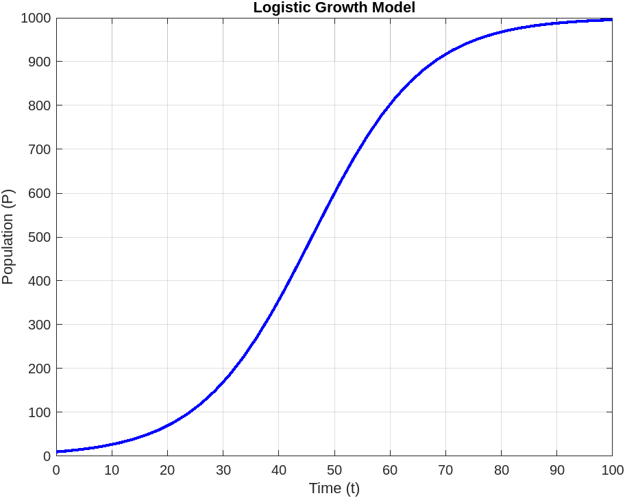

Solving ODE using MATLAB
Introduction
An ODE, or an ordinary differential equation is an equation where a dependent variable and its derivatives
with respect to an independent variable forms an equation. Ordinary differential equations
are applied in various field from economics to engineering. They are an integral part of learning
mathematics and computational science, and as such various courses are developed to study ODEs and their solution
methods. When studying them, usually analytical methods are covered before numerical. But in practice analytical methods are seldom used.
This is the case because sometimes it might not be possible to achieve an analytical solution for our particular problem, or even if it is
possible it doesn't generalize well to changes in the system, in which case we would have to rewrite the whole expression for the new problem.
Thus we are more interested in numerical solutions than the analytical solutions.
MATLAB is a computer algebra and numerical computation software that is widely used for simulations and engineering tasks.
It can be used to solve ODEs numerically. To use, MATLAB must be installed on your computer, or a free version can be accessed from the web
with certain limitation. Once it's installed, one needs to learn the proper syntax to start using it for their purposes.
An ODE can usually appear in two forms: as an initial value problem or IVP or as a boundary
value problem or BVP. The main difference between the two is that for an IVP, the solution at a
single point (usually called the initial point) given, while BVP specifies the solution at at least two different points,
usually called the boundaries of the solution. These are important constraints for solving a differential equation as they
often dictate the physical boundary of the problem.
Initial value problems
A first order initial value problem has the following form \[y'(x)=f(x,y)\] subject to the condition \[y(0)=c\]It is not necessary for the condition to be specified at \(x=0\), however, for our study we will assume that the solution starts from that point and thus an intial value is given at that point. A second order initial value problem has the form \[y''(x)=f(x,y,y')\]subject to the conditions \[y(0)=c_1, \ \ y'(0)=c_2\]These are the most commonly found initial value problems.
Setting up a problem to solve in MATLAB
At first, we look at a first order initial value problem. Let us consider the problem of logistic growth. Suppose a species \(P\) grows at a rate of \(r\) over time. The carrying capacity, which is the steady population after which the system doens't grow is denoted by \(L\). Then the population growth can be modeled by the linear equation \[\dfrac{dP}{dt}=rP\left(1-\dfrac PL\right)\]We can solve this system for some initial population \(P_0\). To set up the problem, we define the parameters first and then the problem using anonymous functions available in MATLAB.
r = 0.1; % Intrinsic growth rate
L = 1000; % Carrying capacity
P0 = 10; % Initial population (initial condition at t=0)
logisticGrowth = @(t, P) r * P * (1 - P / L);
For this problem, we set the intrinsic growth to be \(r=0.1\) and carrying capacity \(L = 1000\). We set the initial condtion as \(P_0 = 10\), which denotes a population of 10 at the start of time. We wish to solve from time 0 to 100, so we use the following
tspan = [0 100]
Now to solve this, all we need to do is use the ode45 function passing in the appropriate parameters.
[t, P] = ode45(logisticGrowth, tspan, P0);
Now, in order to plot the solution, we can use the standard plot options.
figure;
plot(t, P, 'b-', 'LineWidth', 2);
xlabel('Time (t)');
ylabel('Population (P)');
title('Logistic Growth Model');
grid on;
We can then view the solution and see how it grows over time.
We can also solve a system of differential equations using ode45. Suppose we introduce a predator
population \(Q\) to the system, and suppose this population preys on the \(P\) population at a rate of \(a\), and we further assume that the preys
are converted to the predator population at a rate of \(b\). We also assume initially there is \(Q_0\) population of the predator. Combining these,
we get the new set of differntial equations as follows \[\dfrac{dP}{dt}=rP\left(1-\dfrac PL\right)-aPQ\]\[\dfrac{dQ}{dt}=bPQ\]With initial values
\(P_0\) and \(Q_0\). For this problem, we set the hunting rate as \(a=0.05\) and the conversion rate \(b=0.01\), with initial values \(P_0=10\) and
\(Q_0=1\) and solve the problem. We can solve it similarly, but the definition of the anonymous function will change.
dPdt = @(t, PQ) [r * PQ(1) * (1 - PQ(1)/L) - a * PQ(1) * PQ(2);
b * PQ(1) * PQ(2)];
We define the initial conditions as IC = [P0; Q0], and solve as previously.